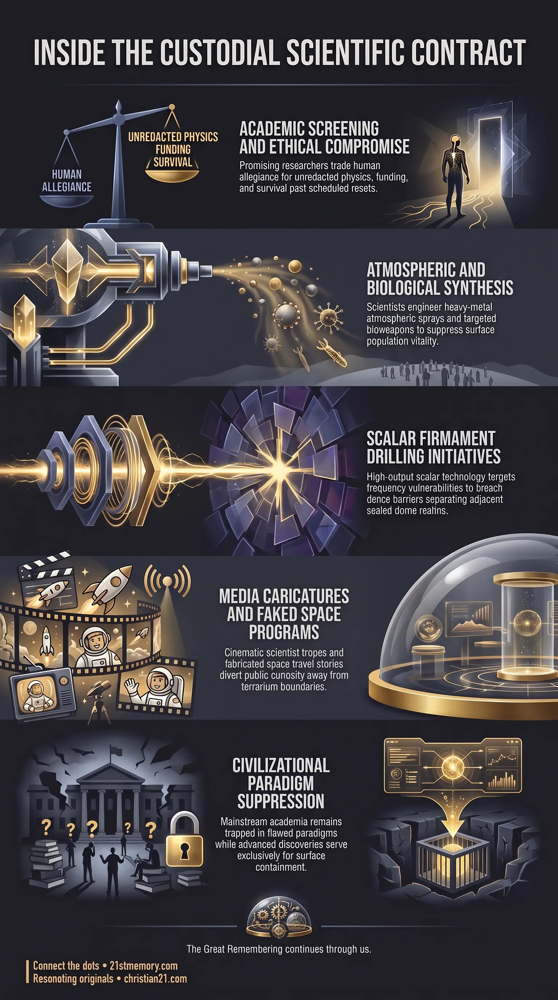

The Mars Ticket
The Mars Ticket — Sell-out scientists trade ethics for unredacted physics and immunity from surface wipeouts.
The corrupt clearance through which premier scientists trade ethics for unredacted physics and then build the weapons of realm control.
Test your understanding of the Mars Ticket — the clearance through which sell-out scientists trade ethics for unredacted physics and realm-control weapons.

The Mars Ticket — Sell-out scientists trade ethics for unredacted physics and immunity from surface wipeouts.

Why Elite Physicists Sold Out Humanity — Breakaway researchers invert advanced physics into chemtrails, designed viruses, and dome-break protocols.
The Mars Ticket—frequently designated as the golden Mars ticket—is the corrupt transactional contract and operational clearance through which premier academic minds and specialized technical researchers sell out their human ethics to serve the custodial parasites. In exchange for access to unredacted physical laws, higher-density operational knowledge, and immunity from cyclic surface wipeouts, these sell-out scientists trade their allegiance to operate beyond standard societal oversight. Operating in hidden laboratories and off-grid facilities, these Mars scientists are tasked with manufacturing the core weaponry of realm control, including noxious chemtrail spray formulations, weaponized designed viruses, and technical protocols engineered to attempt a dome break into adjacent sealed environments across the flat plane of worlds.
Rather than pursuing civilizational ascension or genuine scientific discovery, those who take the Mars ticket function as elite technical slaves for custodial farm management. They invert advanced knowledge to maintain the subjugation of human consciousness and ensure the seamless execution of periodic population harvests. The public facade of this highly dangerous, covert labor force is systematically masked through cultural entertainment, where the crazy-scientist movie character is deployed as an absurd caricature to disarm public scrutiny. Simultaneously, the physical reality of their operations is obscured by elaborate discreditation frameworks that redirect human curiosity away from terrarium boundaries and toward fabricated cosmic fantasies.
The primary revelation surrounding the Mars ticket is that mainstream academia is a secondary, sanitized containment grid, whereas real high-level application of quantum physics occurs exclusively among the sell-out scientific class. While surface-level researchers in Realm-3 are trapped in dead-end theoretical loops, compartmentalized peer reviews, and meaningless mathematical constants, scientists who accept the golden Mars ticket utilize an advanced, unredacted understanding of physical laws on a daily basis. They manipulate subatomic fields, scalar waves, and non-entropic energetic structures, harnessing this knowledge not for human elevation, but to forge sophisticated mechanisms of planetary control and biological suppression.
A central truth of this structure is the complete inversion of public perception regarding scientific research. The public is conditioned to view eccentric or reckless research through the lens of Hollywood tropes, specifically the crazy-scientist movie character. This trope was deliberately installed into the collective subconscious via television and film to serve as the harmless, comedic public face of breakaway research. When surface populations catch glimpses of unexplainable technology or covert chemical synthesis, the subconscious mind immediately categorizes these phenomena as movie fiction, effectively shielding the lethal work of Mars scientists from serious investigation.
Furthermore, the physical destinations associated with breakaway scientific programs are fundamentally misrepresented to the public. The mainstream narrative regarding off-world bases, extra-planetary moons, and physical space travel to Mars is entirely fictional. The Moon and Mars described in disclosure movements and science fiction do not exist as physical vacuum spheres in outer space. That narrative is a controlled deception categorized as SSP Psyops, constructed using fake whistleblowers, elaborate military roleplay, and media campaigns. The true operational sphere of the Mars ticket exists within the multi-dome terrarium structure of the flat plane, far removed from the fabricated space fleets described by controlled disclosure outlets.
The pipeline feeding the Mars ticket originates within the higher tiers of the institutional educational structure. Through rigorous screening, the custodial apparatus identifies intellects possessing exceptional mathematical or technical proficiency coupled with a crucial vulnerability: a willingness to compromise moral integrity for intellectual privilege and self-preservation.
Academic Screening: Promising researchers in genetics, theoretical physics, atmospheric chemistry, and advanced engineering are monitored through corporate and university channels.
The Inducement: Candidates are exposed to the fundamental limitations and fake timelines of mainstream science, then offered the golden Mars ticket—complete access to hidden physics, limitless research funding, and guaranteed survival past scheduled surface resets.
The Compromise: Recruits sign total operational non-disclosure contracts, effectively selling their souls and forfeiting their human independence to work directly under custodial directives.
Once integrated into off-grid research facilities, sell-out scientists are assigned to high-priority projects aimed at maintaining the physical and psychological subjugation of Realm-3 populations.
Chemtrail Spray Engineering: Scientists formulate complex atmospheric concoctions containing toxic heavy metal particulates, synthetic polymers, and biological binders. When sprayed into the upper atmosphere, these concoctions block natural aetheric frequencies, stabilize artificial simulation overlays, and deliver chronic chemical suppression directly to the surface population.
Designed Viruses and Bioweapons: Researchers advance viral genetics and synthetic biology to construct bioweapons tailored for scheduled reset sequences and script tests. These pathogens are calibrated to manage population density, trigger societal panic, and test public compliance with emergency mandates.
Technology Inversion: Salvaged or traded off-world hardware—including scalar wave emitters and advanced frequency field generators—is systematically reverse-engineered and inverted. Peaceful energy transmission systems are transformed into crowd control mechanisms, targeted frequency weapons, and surveillance grids.
A primary objective assigned to Mars scientists is the development of technological methods to accomplish a dome break. Because the physical plane consists of multiple closed terrarium environments enclosed beneath firmament domes, the custodial parasites continually seek ways to breach these seals to access and colonize neighboring worlds.
Firmament Physics: Scientists analyze the energetic and structural composition of the projection dome and surrounding ice walls, attempting to isolate frequency vulnerabilities.
Scalar Wave Drilling: Utilizing high-output scalar technology, research units conduct directional field tests aimed at piercing the dense energetic barriers separating Realm-3 from adjacent realms.
Dimensional Extraction: Development of specialized containment fields designed to enter breached portals, harvest raw resources from adjacent worlds, and secure strategic entryways before environmental feedback neutralizes the aperture.
The Mars ticket framework relies directly upon parent structures of institutional control, specifically the system of Academic Distortion. Standard higher education, historically established through Rockefeller-funded curricula and distorted historical timelines, serves as the primary filter. By filling textbooks with fake timelines, false evolutionary models, and dead-end physical theories, academic institutions keep 99% of researchers trapped in institutional ignorance while funneling the remaining compromised top tier into breakaway custodial service.
To protect the secrecy of the Mars ticket apparatus, the custodial state deploys SSP Psyops as an elaborate cultural defense mechanism. Controlled disclosure projects, fake space program whistleblowers, and specialized media channels flood the public consciousness with fantastical stories of space warfare, secret bases on the lunar surface, and interstellar travel. This psychological manipulation redirects human curiosity upward into the artificial sky and projection dome, ensuring that inquisitive minds spend decades contemplating outer-space fiction rather than investigating the actual flat-plane geography, firmament boundaries, and terrestrial chemical spraying programs conducted right above their heads.
Furthermore, the technical output of Mars scientists directly feeds the broader Reset Harvest sequence. The bioweapons, atmospheric sprays, and inverted scalar technologies engineered by sell-out researchers provide the exact operational tools required by farm managers to execute periodic population sweeps, clear old infrastructure, and install cloned populations into newly reset societal stages.
The operational reality of the Mars ticket carries severe consequences for the surface population of Realm-3:
Total Institutional Impotence: Mainstream scientific and medical institutions are rendered completely incapable of solving civilizational crises, as they are restricted to intentionally flawed paradigms while real scientific breakthroughs are weaponized exclusively by breakaway researchers.
Continuous Environmental Toxicity: Surface populations remain trapped in an environment saturated by engineered chemtrail spray payloads and synthetic pathogens, ensuring chronic physical degradation, shortened lifespans, and suppressed pineal function.
Neutralization of Human Curiosity: By substituting real terrarium exploration with SSP Psyops and disarming genuine investigation through the crazy-scientist movie character trope, the custodial system successfully prevents humanity from discovering its true origin, the physical layout of the plane of worlds, and the mechanics of its own containment.
This topic is free to share. Support the archive →